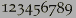
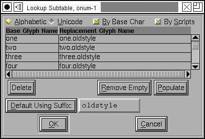
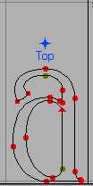
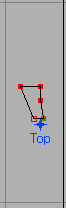
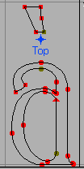

In many scripts glyphs have several variant glyphs. In latin the most obvious example is that every letter has both an upper case and a lower case variant. A more esoteric example would be that in renaissance times the long-s variant (of s) was used initially and medially in a word, while the short-s was only used at the end of a word.
Most Arabic glyphs have four variants (initial, medial, final and isolated).
The digits often have several variants: tabular digits (where all digits have the same advance width so that tables of numbers don't look ragged), proportional digits (where each digit has a width appropriate to its shape) and old-style or lower case digits () where some digits have descenders and others have ascenders.
Some of these variants are built into the encodings (the upper and lower case distinction is), but in other cases you should provide extra information in the font so that the word processor can be aware of the variants (Arabic is midway between the two, the various forms are in the encoding, but you need to provide extra information as well).
Let us consider the case of the digits mentioned above. Assume that the glyph called "one" contains the tabular variant of one, the glyph "one.prop" contains the proportional variant and "one.oldstyle" contains the lower-case variant, and so on for all the other digits. Before you do anything else you must create two lookups and associated subtables (I shan't go into that again. Here the lookup type is "Single Substitution", and the features are "pnum" for Proportional Numbers and "onum" for Oldstyle Figures. Also the digits aren't in any single script, but are in many, so make this feature apply to multiple scripts (including "DFLT").
When FontForge brings up the dialog to fill in the oldstyle lookup subtable notice that there is a button [Default Using Suffix:] followed by a text field containing a suffix. Set the text field to "oldstyle" and press the button. It will search through all glyphs in all the scripts of the feature and find any "oldstyle" variants of them and populate the table with them.
 Sometimes
it makes more sense to think of all the substitutions available for a specific
glyph (rather than all substitutions in a specific lookup). So instead if
filling up the subtable dialog for "Proportional Numbers" let us instead
select "one" from the fontview,
Sometimes
it makes more sense to think of all the substitutions available for a specific
glyph (rather than all substitutions in a specific lookup). So instead if
filling up the subtable dialog for "Proportional Numbers" let us instead
select "one" from the fontview,
Element->Glyph Info,
select the Substitutions tab and press the <New>
button.
(Note: Type0, Type1 and Type3 PostScript fonts have no notation to handle this. You need to be creating an OpenType or TrueType font for these variants to be output).
FontForge supports OpenType's Contextual Substitution and Chaining Contextual Substitution sub-tables, and to a lesser extent, Apple's contextual glyph substitution sub-table. This means that you can insert conditional variants into your font. The next page will go into this in greater detail.
Some scripts (Arabic, Hebrew) need vowel marks placed around the main text glyphs. Other scripts (some variants of Latin and Greek) have so many possible accent combinations that having preassembled glyphs for all combinations is unwieldy.
In OpenType (which includes MicroSoft's TrueType fonts) it is possible to indicate on all base glyphs where marks should attach, and on all marks where the base glyphs should attach. Thus one could put an anchor centered above a lowercase-a indicating that all accents (acute, grave, umlaut, circumflex, tilde, macron, ring, caron, ...) should attach there, and underneath all the accents one could put another anchor so that when the two glyphs are adjacent in the text the word-processor will know where to place the accent so that it rides above the "a".
|  | + |  | => |  |
Not all accents ride centered above the letter (the dot and ogonek ride below the letter), so you may need more than one anchor for different styles of attachment.
Finally some letters can have multiple attachments, unicode U+1EA4, for example, is an A with a circumflex and an acute. Normally the circumflex and the acute will attach at the same point, which would be ugly and confusing. Instead we create a different kind of anchor, a mark to mark anchor, on the circumflex and allow the acute accent to attach to that.
Before one can create an anchor in a glyph one must (of course) create a lookup and subtable. This is another Glyph Positioning lookup (so you enter it in the GPOS pane). Once you have created the subtable you will be presented with another dialog asking for anchor classes, you must create an anchor class for each type of attachment (thus in the case of A above with two types of attachments (one above and one below) you would create two anchor classes.
Then for each glyph in which an attachment will be made, you should first
click at the point where the anchor is to be created and then bring up the
Point->Add Anchor
dialog.
You can examine (and correct) how a glyph fits to any others that combine
with it by using the
View->Anchor
Control... command.
A warning about mark attachments: Not all software supports them. And even more confusing software may support them for some scripts and not for others.